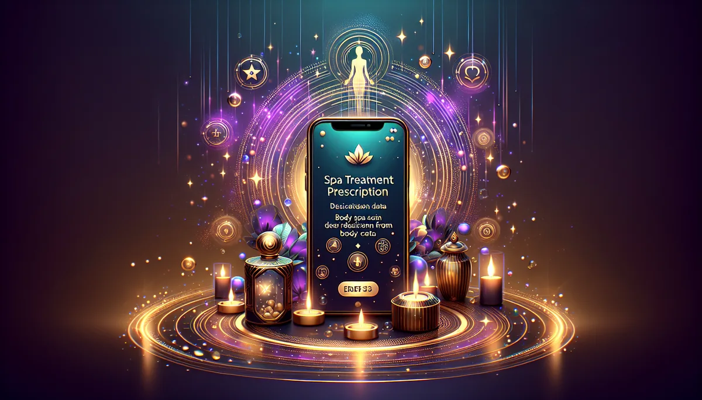

SPA PRESCRIPTION
🧖
你的身體，正在替你說什麼？
你的肩膀替你扛著責任、你的胃替你消化焦慮、你的下巴替你咬住不敢說的話。身體從來不說謊，只是你很少停下來聽。
20 題身體覺察，讓我們替你開一張 SPA 處方箋。
🧖 20 題 · 約 5 分鐘 · 12 種 SPA 處方 · 馥靈之鑰獨家
第 1 題
0%
讓身體說話 🧖
📥 儲存圖片
🧵 分享到 Threads
📋 複製結果
💬 分享到 LINE
🔄 重新測一次
✨ 更多覺察測驗
💅
指尖能量色
🫧
壓力解方精油
🌬️
情緒味道
🔥
倦怠指數